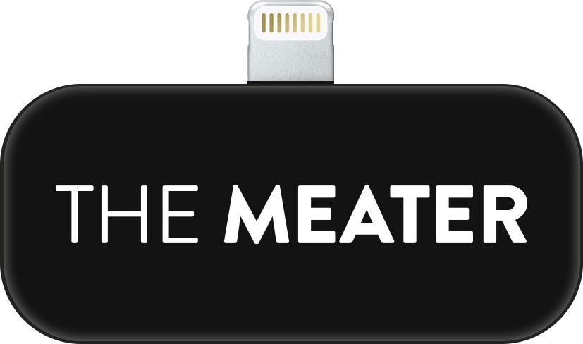
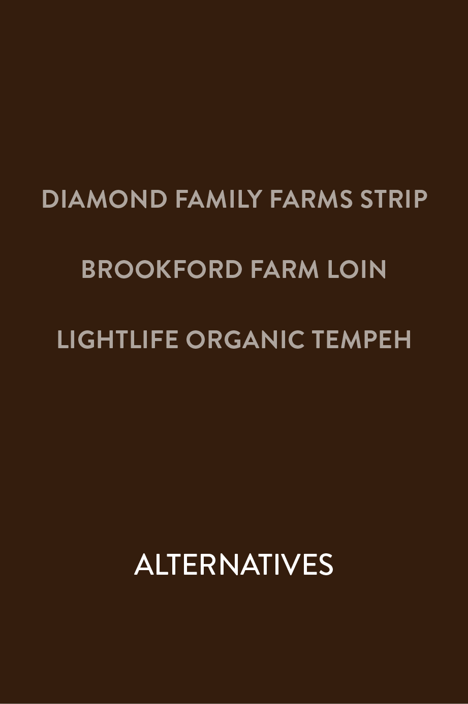

The Meater
The Meater
Select a piece of meat below to explore The Meater.
Click to swipe through the app screens to see the information you get from a reading.

Gently touch The Meater to your meal and swipe for your reading results.
This piece of rump roast has high and healthy levels of essential vitamins and minerals.
Low levels of hormones and antibiotics are ideal in healthy meat.
A primarily grass diet produces more nutrient-rich meat.
A safe serving size of this meat is eight ounces.
If you're still looking for an alternative healthy option, click the provided links.

Gently touch The Meater to your meal and swipe for your reading results.
This piece of filet mignon has moderate levels of essential vitamins and minerals.
Moderate levels of hormones and antibiotics are safe but not ideal in meat.
A grass and grain mixed diet is safe in meat but not ideal.
A safe serving size of this meat is four ounces.
If you're still looking for an alternative healthy option, click the provided links.
Gently touch The Meater to your meal and swipe for your reading results.
This rack of ribs has low levels of essential vitamins and minerals.
High levels of hormones and antibiotics are not safe and should be avoided in meat.
A mainly grain diet produce meat that's less nutrient-rich.
A safe serving size of this meat is one ounce.
If you're still looking for an alternative healthy option, click the provided links.